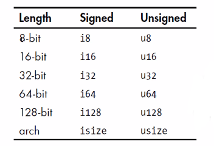
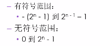

变量与可变性
变量与常量
- 常量（constant），常量在绑定值以后也是不可变的，但是它与不可变的变量有很多区别
- 不可以使用
mut，常量永远都是不可变的 - 声明常量使用
const关键字，它的类型必须被标注 - 常量可以在任何作用域内进行声明，包括全局作用域
- 常量只可以绑定到常量表达式，无法绑定到函数的调用结果或只能在运行时才能计算出的值
- 不可以使用
- 在程序运行期间，常量在其声明的作用域内一直有效
- 命名规范：Rust 里常量使用全大写字母，每个单词之间用下划线分开
Shadowing（隐藏）
可以使用相同的名字声明新的变量，新的变量就会 shadow（隐藏）之前声明的同名变量
- 在后续代码中这个变量名代表的就是新的变量
1
2let mut guess = 10;
let guess = 888;shadow 和把变量标记为
mut是不一样的- 如果不使用 let 关键字，那么重新给非
mut的变量赋值会导致编译时错误 - 而使用 let 声明的同名新变量，也是不可变的
- 使用 let 声明的同名新变量，它的类型可以与之前不同
- 如果不使用 let 关键字，那么重新给非
数据类型
标量和复合类型
Rust 是静态编译语言，在编译时必须知道所有变量的类型
一个标量类型代表一个单个的值
Rust 有四个主要的标量类型
- 整数类型
- 浮点类型
- 布尔类型
- 字符类型
整数类型
整数类型没有小数部分
例如 u32 就是一个无符号的整数类型，占据 32 位的空间
无符号整数类型以
u开头有符号整数类型以
i开头Rust 的整数类型如图所示

- 每种都分
i和u，以及固定的位数

- 每种都分
isize 与 usize 类型
isize和usize类型的位数由程序运行的计算机的架构所决定- 如果是 64 位计算机，那就是 64 位
- 如果是 32 位计算机，那就是 32 位
- 使用
isize或usize的主要场景是对某种集合进行索引操作
整数字类型
| Number literals | Example |
|---|---|
| Decimal | 98_222 |
| Hex | 0xff |
| Octal | 0o77 |
| Binary | 0b1111_0000 |
| Byte（u8 only） | b'A' |
- 除了 byte 类型外，所有的数值字面值都允许使用类型后缀
- 例如 57u8（57代表u8类型的数）
- 如果你不太清楚应该使用哪种类型，可以使用 Rust 相应的默认类型
- 整数的默认类型就是 i32
- 总体上来说速度很快，即使在 64 位系统中
整数溢出
例如：u8 的范围是 0-255，如果你把一个 u8 变量的值设为 256，那么
调试模式下编译：Rust 会检查整数溢出，如果发生溢出，程序在运行时就会 panic（恐慌）
发布模式下（–release）编译：Rust 不会检查可能导致 panic 的整数溢出
如果溢出发生，Rust 会执行 “环绕操作”：将256变成0,257变成1（所以并不会导致程序 panic）
浮点类型
- Rust 有两种基础的浮点类型，也就是含有小数部分的类型
- f32，32位，单精度
- f64，64位，双精度
- Rust 的浮点类型使用 IEEE-754 标准来表述
- f64 是默认类型，因为在现代 CPU 上 f64 和 f32 的速度差不多，而且精度更高
数值操作
1 | fn main() { |
布尔类型
- Rust 的布尔类型也有两个值：true 和 false
- 布尔类型占用1个字节空间
- 符号是 bool
字符类型
Rust 语言中 char 类型被用来描述语言中最基础的单个字符
字符类型的字面值使用单引号
占用4个字节大小
是 Unicode 标量值，可以表示比 ASCII 多得多的字符内容：拼音、中日韩文、零长度空白字符、emoji 表情等
范围：U+0000 到 U+D7FF、U+E000 到 U+10FFFF
但 Unicode 中并没有 “字符”的概念，所以直接上认识的字符也许与 Rust 中的概念并不相符
复合类型
- 复合类型可以将多个值放在一个类型里
- Rust 提供了两种基础的符合类型：元组（Tuple）、数组
Tuple（元组）
- Tuple 可以将多个类型的多个值放在一个类型里
- Tuple 的长度是固定的：一旦声明就无法改变
创建 Tuple
- 在小括号里，将值用逗号分开
- Tuple 中的每个位置都对应一个类型，Tuple 中各元素的类型不必相同
1 | let tup: (i32, f64, u8) = (500, 6.4, 1); |
获取 Tuple 元素值
可以使用模式匹配来解构（
destructure）一个 Tuple 来获取元素的值
1 | let tup: (i32, f64, u8) = (500, 6.4, 1); |
访问 Tuple 的元素
在 tuple 变量使用点标记法，后接元素的索引号
1 | let tup: (i32, f64, u8) = (500, 6.4, 1); |
数组
- 数组也可以将多个值放在一个类型里
- 数组中每个元素的类型必须相同
- 数组的长度也是固定的
数组的用处
- 如果想让你的数据存放在 stack（栈）上而不是 heap（堆）上，或者想保证有固定数量的元素，这是使用数组更有好处
- 数组没有 Vector 灵活
- Vector 和数组类似，它是由标准库提供
- Vector 的长度可以改变
- 如果你不确定应该用数组还是 Vector，那么估计你应该用 Vector
声明一个数组
在中括号里，各值用逗号分开
1
let a = [1, 2, 3, 4, 5];
如果数组的每个元素值都相同，那么可以在：
- 在中括号指定初始值
- 然后是一个
; - 最后是数组的长度
1
let a = [3; 5]; 相当于 let a = [3, 3, 3, 3, 3];
数组的类型
数组的类型以这种形式表示：[类型；长度]
- 例如：
let a:[i32; 5] = [1, 2, 3, 4, 5];
- 例如：
访问数组的元素
数组是 Stack 上分配的单个块的内存
可以使用索引来访问数组的元素
如果访问的索引超出了数组的范围，那么：
编译会通过
编译会通过不是绝对的，Rust 还是会对索引进行一个简单的检查
运行会报错（runtime 时会 panic）
rust 不会允许其继续访问相应地址的内存；但是在 C/C++ 中是可以访问的，但是不知道里面是什么东西
函数
- 声明函数使用
fn关键字 - 依照惯例，针对函数和变量名，Rust 使用 snake case 命令规范
- 所有的字母都是小写的，单词之间使用下划线分开
1 | fn main() { |
函数的参数
- parameters、arguments
- 在函数签名里，必须声明每个参数的类型
1 | fn main() { |
函数体中的语句与表达式
- 函数体由一系列语句组成，可选的由一个表达式结束
- Rust 是一个基于表达式的语言
- 语句是执行一些动作的指令
- 表达式会计算产生一个值
- 函数的定义也是语句
- 语句不返回，所以不可以使用 let 将一个语句赋给一个变量
1 | fn main() { |
函数的返回值
- 在
->符号后边声明函数返回值的类型，但是不可以为返回值命名 - 在 Rust 里面，返回值就是函数体里面最后一个表达式的值
- 若想提前返回，需使用 return 关键字，并指定一个值
- 大多数函数都是默认使用最后一个表达式作为返回值
1 | fn plus_five(x: i32) -> i32 { |
注释
单行注释
1
// This is a function
多行注释
1
2
3
4/*
This is a function
This is a function
*/文档注释
控制流
if 表达式
- if 表达式允许你根据条件来执行不同的代码分支
- 这个条件必须是 bool 类型
- if 表达式中，与条件相关联的代码块就叫分支（arm）
- 可选的，在后面可以加上一个 else 表达式
1 | fn main() { |
使用 else if 处理多重条件，但如果使用多个 else if，那么最好使用 match 来重构代码。
在 let 语句中使用 if，因为 if 是一个表达式，所以可以将它放在 let 语句中等号的右边。
Rust 是一个强类型的语言，同时也是一个特别安全的语言，所以在编译期间就要知道变量的类型是什么；
如果将下面的 6 改成字符串
6就会报错，那么无法在编译期间推导变量的类型
1 | fn main() { |
循环
- Rust 提供了 3 循环：loop、while、for
1 | fn main() { |
1 | fn main { |
1 | fn main() { |
使用 for 循环遍历集合
可以使用 while 或 loop 来遍历集合，但是易错且低效
1
2
3
4
5
6
7
8
9fn main() {
let a = [10, 20, 30, 40, 50];
let mut index = 0;
while index < 5 {
println!("The value is: {}", a[index]);
index = index + 1;
}
}使用 for 循环更简洁紧凑，它可以针对集合中的每个元素来执行一些代码
1
2
3
4
5
6fn main() {
let a = [10, 20, 30, 40, 50];
for element in a.iter() {
println!("The value is: {}", element);
}
}由于 for 循环的安全、简洁性、所以它在 Rust 里用的最多
Range
- 标准库提供
- 指定一个开始数字和一个结束数字，range 可以生成它们之间的数字
- rev 方法可以反转 Range
1 | fn main() { |